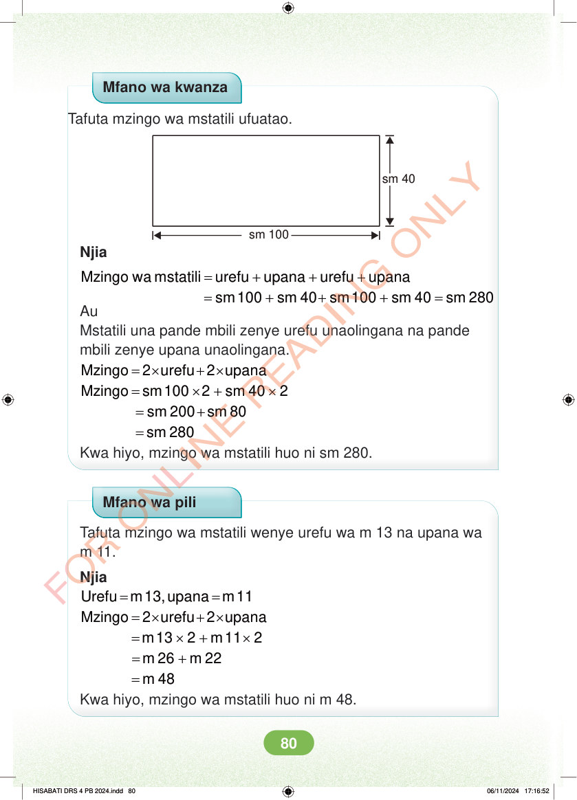

Mfano wa kwanza Tafuta mzingo wa mstatili ufuatao. sm 40 sm 100 Njia = + + + Mzingo wa mstatili urefu upana urefu upana = + + + = sm 100 sm 40 sm 100 sm 40 sm 280 Au Mstatili una pande mbili zenye urefu unaolingana na pande mbili zenye upana unaolingana. = × + × 2 urefu 2 upana Mzingo = × + × Mzingo sm 100 2 sm 40 2 = + sm 200 sm 80 = sm 280 Kwa hiyo, mzingo wa mstatili huo ni sm 280. Mfano wa pili Tafuta mzingo wa mstatili wenye urefu wa m 13 na upana wa m 11. Njia = = Urefu m 13, upana m 11 = × + × 2 urefu 2 upana Mzingo = × + × m 13 2 m 11 2 = + m 26 m 22 = m 48 Kwa hiyo, mzingo wa mstatili huo ni m 48. HISABATI DRS 4 PB 2024.indd 80 HISABATI DRS 4 PB 2024.indd 80 06/11/2024 17:16:52 06/11/2024 17:16:52